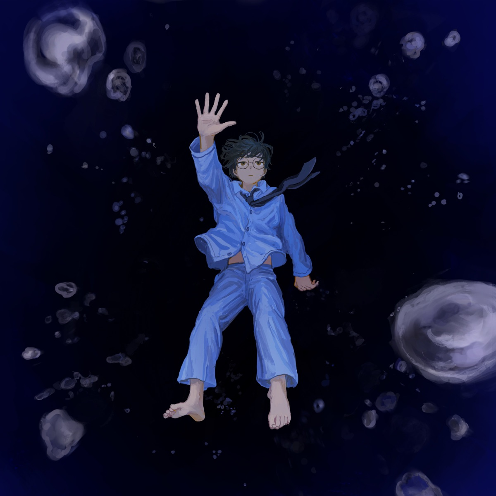

English Lyrics
[Verse 1]
Burn to ashes all convenient notions
I've already let go of any ridiculous dreams
Betrayal and secrecy wafts through the air
I can't move from here
I have been born, or should I say I have been broken
One day in a certain place
The future was standing still, indefinitely
And yet, somewhere in my heart I still felt you
I can't let this go on, who am I now?
[Pre-Chorus]
Hey, I was always, always by your side, right?
You may say "You've got it wrong", but I didn't lie
It might not have been what I'd hoped
But my wish is that I can come to believe
That the hurt I fеlt from meeting you was love
[Chorus]
Don't touch me! I pray, a serеnade
I hope you find true happiness, without me
More than anyone, no matter what I had to loose
I believed that this was love, so now give me my punishment
[Post-Chorus]
No one else, only you
Even if the world has not yet forgotten
I'm sure, still, that even if it's you and only you
I will continue to sing even if weary and tired of wishing, a serenade
I will continue to sing even if weary and tired of wishing, a serenade
[Verse 2]
A comedy played as written, trite
How much longer will you continue to gripe?
It's reflected in those eyes shining with ego "Who" are "you"?
I wish I could have just danced on that stage in blissfull ignorance
[Pre-Chorus]
As it was illuminated by darkness
Both hope and misfortune are selfish
All of us are complicit without question
From that night when my fate was sealed
I forgot how to love
[Chorus]
Wishing for so much, praying for so much
I'm sorry for the sad way in which things ended
Even if I lost everything, even if everything vanishes
All I want, is the pain that you have been living with all this time
[Bridge]
How many more times do I need to count
How many more times do I need to hurt
How many more times do I need to lose
How many more times must I be broken
How many more times do I need to count
How many more times do I need to hurt
How many more times do I need to lose
For this feeling to be satisfied?
[Chorus]
Wishing for so much, praying for so much
I'm sorry for the sad way in which things ended
Even if you lost everything, and everything was wrong
I loved you all along
Don't disappear! I pray, a serenade
I hope you find true happiness, without me
More than anyone, no matter what I had to loose
I believed that this was love, so now give me my punishment
[Post-Chorus]
No one else, only you
Even if the world has not yet forgotten
I'm sure, still, that even if it's you and only you
I will continue to sing even if weary and tired of wishing, a serenade
Even when the rain has passed, even if it's not me anymore
I will continue to sing even if weary and tired of wishing, a serenade
Romanized Lyrics
[Verse 1]
Tsugou no ii omoi wo moyashite
Akireta negai wa mou tebanashita
Uragiri ya himitsu ga tadayotte
Koko kara ugokenai
Umarete shimatta, aruiha kowarete shimatta
Ano hi ano basho de zutto, tomatta mama de ita mirai
Sore demo, kokoro no doko ka de kimi wo kanjiteita
Yurusenai, ima no boku wa dare?
[Pre-Chorus]
Nee, zutto zutto soba ni itanda "Kanchigaida" tte, uso janaiyo
Nozonda mono janakutomo
Anata ni deaeta itami dake ga
Ai datte shinjirareru you ni
[Chorus]
Boku ni furenaide! Inoru, serenaade
Boku nashide umaku shiawase ni natte ne
Dare yori mo zutto, nani wo tebanashite mo
Kore ga ai datte shinjiteita, batsu wo kudasai
[Post-Chorus]
Dare de mo nai, anata, anata dake
Sеkai ga mada wasurete kurenakutе mo
Kitto, mada anata, anata dake
Negai tsukarete mo utauyo, serenaade
Negai tsukarete mo utauyo, serenaade
[Verse 2]
Shinari odoori no komedi fukou jiman wa haumenii?
Egoisutikku ni hikatta hitomi no naka ni utsutteiru
"Anata" wa "dare?" kurayami ga hikaraseta butai no ue de
Nani mo shirazu ni tada odotte iraretanara yokatta
[Pre-Chorus]
Kibou mo, fukou mo migatteda bokura wa, zenin kyou hansha datta
Utagau yochi mo nai hodo
Unmei ga sadamatta, ano yoru kara
Boku wa aishi kata wo wasureta
[Chorus]
Kore dake negatte, kore dake inotte
Konna, kanashii ketsumatsu de gomenne
Subete ushinatte, subete kiesatte mo
Tada, kimi ga zutto ikiteita itami ga hoshii
[Bridge]
Ato, nan kai kazoetara, ato, nan kai kizutsukeba
Ato, nan kai ushinaeba, ato, nan kai kowaretara
Ato, nan kai kazoetara, ato, nan kai kizutsukeba
Ato, nan kai ushinaeba kono omoi wa mitasareru?
[Chorus]
Kore dake negatte, kore dake inotte
Konna, kanashii ketsumatsu de gomenne
Subete ushinatte, subete ga chigatte mo
Tada, boku ga zutto aishiteita
Kimi yo kienaide! Inoru, serenaade
Boku nashide umaku shiawase ni nattene
Dare yori mo zutto, nani wo tebanashite mo
Kore ga ai datte shinjiteita, batsu wo kudasai
[Post-Chorus]
Dare de mo nai, anata, anata dake
Sekai ga mada wasurete kurenakute mo
Kitto, mada anata anata dake
Negai tsukarete mo utauyo, serenaade
Ame ga ori satte mo, boku janakutatte
Negai tsukarete mo utauyo, serenaade